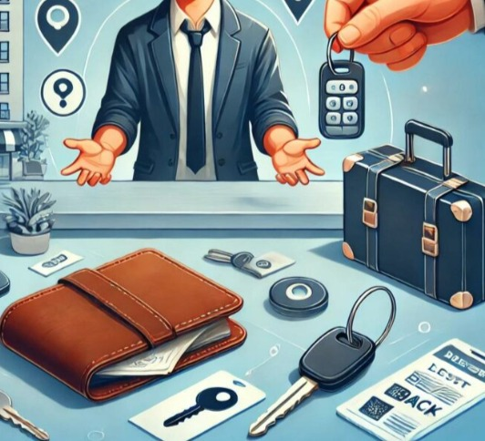
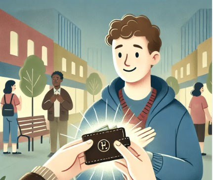
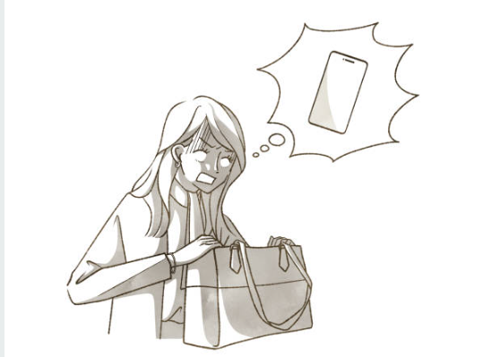

Experience effortless recovery with our dedicated lost and found service.
Three simple steps to reconnect with your lost items
Fill out a simple form to upload details of the item you've found lost, including descriptions, images and location.

Filter through a list of found items reported by others to see if your lost belongings have been recovered.

After finding your lost item, contact admin and arrange a safe handover.
Choose from the options below
Submit details of the item you've found lost, including descriptions and images.

Fill out the form. You will be notified if a matching item is found or submitted.
Browse items reported by others. Search by entering your item's details.
Find answers to the most commonly asked questions about the Lost & Found portal.